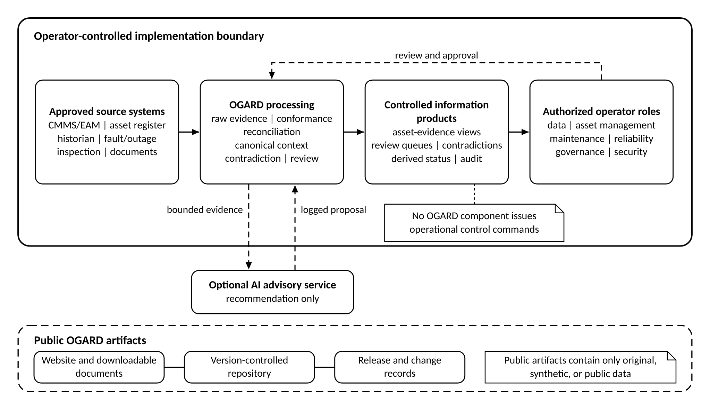
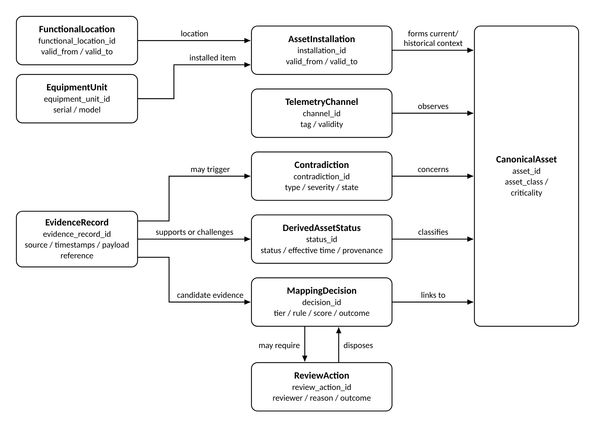

Framework
OGARD combines explicit identity regimes, preserved evidence, versioned reconciliation, authorized review, contradiction handling, and operator-governed outputs.
The defined problem
The same physical equipment may be represented by a functional location in a maintenance system, a serial-numbered unit in an asset register, and one or more tags in a historian. Each representation may be valid for its own purpose while remaining incomplete for cross-system reasoning.
OGARD does not create a new universal system of record. It creates an auditable interpretation layer while preserving the source evidence that supports or challenges that interpretation.
A governed asset view must not erase the records that support or challenge it.
Identity model
Three identity regimes are kept distinct. An equipment unit is linked to a functional location through a time-valid installation relationship, and a telemetry channel has its own time-valid mapping to the functional location, installed item, or aggregate it observes.
- Functional location
- Network role or position.
- Equipment unit
- Physical installed item.
- Telemetry identity
- Measurement tag or channel.
Equality in one identity regime must not imply equality across the others. Replacement, relocation, tag drift, and late-arriving records must remain explainable through time and evidence.
Five components
- Canonical asset-and-evidence model. Separates the physical asset from the records that support or challenge its representation.
- Layered data architecture. Preserves raw evidence and makes normalization, mapping, and consumption decisions explicit.
- Tiered reconciliation workflow. Resolves cross-system identity using controlled rules, scores, and review.
- Contradiction and derived-status workflow. Preserves disagreement and applies operator-approved status rules.
- Governance and production controls. Defines decision rights, security, change control, monitoring, and audit.
The broader design includes similarity methods and derived statuses. Release 0.2.2 implements the focused deterministic identity and review workflow described on the Software page.
Reference architecture
The reference architecture keeps public artifacts separate from operator-controlled implementation boundaries and preserves the evidence, decisions, and limitations behind each output.

- Public reference boundary
- Contains only original, synthetic, or public material, including papers, diagrams, reference files, worked examples, and synthetic test data.
- Operator-controlled boundary
- Inherits the operator's access, retention, security, review, and decision-rights requirements.
- No control-plane function
- OGARD outputs are information products and do not issue switching, protection, or control-room commands.
- Optional AI advisory service
- May recommend candidate mappings, summarize evidence, classify documents, or prioritize review, but may not become the final authority.
Four logical layers
- Raw evidence. Capture or reference source records with original values, identifiers, time, schema, ingestion metadata, and security classification.
- Conformance. Validate, normalize permitted fields, standardize time and units, identify duplicates, and route failures without erasing evidence.
- Canonical asset-and-evidence. Maintain asset context, time-valid relationships, mapping decisions, review outcomes, contradictions, and status provenance.
- Consumption. Provide controlled views, review queues, audit outputs, and approved information products with known limitations.

Core data model
Asset context is separated from the evidence that describes or challenges it. Evidence records support or challenge derived status, may trigger contradictions, and supply candidate evidence to mapping decisions, which may require review.

Reconciliation workflow
Deterministic where possible, reviewed where necessary.
- Bound candidates. Use location, asset class, identifiers, approved aliases, and time windows to create a controlled candidate set.
- Apply versioned rules. Accept explicit relationships only through documented, tested, and effective-dated deterministic logic.
- Score incomplete evidence. Use reproducible similarity methods only for approved sources and asset classes, with declared thresholds.
- Review and record. Route ambiguous, contradictory, or consequential cases to authorized review and retain the full decision record.
Status vocabulary
OGARD proposes a reference vocabulary, not a universal operational classification. Each operator must define the evidence and authority required for each status.
| Status | Reference meaning | Minimum interpretation safeguard |
|---|---|---|
| Available | Approved evidence supports expected availability within the defined scope, and no unresolved material contradiction blocks the classification. | Availability is assessed within the defined evidence scope. The operator defines coverage, freshness, and disqualifying contradictions; latent defects require separate assessment. |
| Degraded | Approved evidence supports impaired condition or reduced capability under an operator-defined rule. | Requires asset-class-specific criteria, time validity, and authorized engineering interpretation. |
| Offline | Approved evidence supports that the asset is unavailable, disconnected, or out of service. | Must distinguish planned, forced, temporary, and data-quality conditions using time-valid evidence. |
| At risk | Approved evidence indicates a condition requiring attention but does not support Degraded or Offline. | Must not be represented as a failure prediction; indicators, expiry, and review requirements must be defined. |
| Unknown | Evidence is insufficient, stale, ambiguous, outside scope, or materially contradictory. | Unknown is the safe default whenever another status cannot be justified. |
Worked example
A synthetic maintenance record references functional location FL-NE-SUB114-TX02 and contains no equipment serial number. Installation history shows former equipment unit EQ-TR-OLD-01 (serial TR-88-104553) at the location until 14 April 2026 and replacement unit EQ-TR-NEW-01 (serial TR-26-778204) from 15 April 2026. Historian tag NE114.TX2.OILTMP remains explicitly associated with the former equipment unit after replacement.
- The functional-location rule links the work order to the location, but not automatically to a physical equipment unit.
- The installation table limits candidate equipment units using the work-order date.
- An illustrative similarity score (0.78) and date context identify the replacement unit as the leading candidate, but the score remains below the operator's auto-accept threshold.
- The case is routed to review with the candidate set, source evidence, time window, and score.
- A synthetic authorized reviewer accepts the replacement unit and records the reason and evidence references.
- The stale telemetry association to the former unit is preserved as contradiction
CON-TELEM-STALE-001(TELEMETRY_EQUIPMENT_CONFLICT, state open), pending resolution by an authorized telemetry or historian owner. - Until the contradiction is resolved, any status that depends on that telemetry remains Unknown or carries an explicit limitation under operator rules.
Identity is resolved through time-valid evidence, the review decision is auditable, and contradictory information is retained rather than silently overwritten. The example is deliberately small and non-executable; the reference implementation uses deterministic rules and does not implement its illustrative similarity score or derived status.
Example records
- Source records: work order, asset register, installation history, and historian evidence.
- Canonical context: functional location, equipment units, installations, telemetry, and asset context.
- Mapping decision: deterministic location match and review-routed equipment candidate.
- Review action: authorized synthetic reviewer outcome and evidence references.
- Contradiction: stale telemetry-to-equipment relationship and resolution ownership.
- Derived status: controlled Unknown outcome and defined interpretation.
- Audit log: traceable sequence of ingestion, mapping, review, and contradiction events.
- Illustrative rules: non-production rule definitions used by the example.
Reference files
- Contradiction taxonomy v0.1: the closed, versioned set of contradiction types.
- Indicative CIM crosswalk v0.1: non-normative guidance relating OGARD concepts to IEC Common Information Model concept families.
- Scenario catalogue v0.1: the broader, author-selected catalogue of synthetic scenarios.
Relationship to existing standards and tools
Master data management (MDM) platforms, CIM harmonization programs, and general-purpose entity-resolution libraries provide valuable storage, semantic, lineage, matching, and survivorship capabilities. OGARD builds on these capabilities to address a specific implementation problem: reconciling grid-asset evidence while distinguishing functional location, installed equipment, and telemetry identity.
- Master data management
- OGARD does not define success as producing one surviving golden value. It requires the disagreement history, time-valid installation relationships, mapping decisions, and unresolved contradictions to remain inspectable.
- CIM harmonization
- OGARD focuses on how inconsistent source evidence is admitted, mapped, reviewed, and governed rather than claiming a complete semantic profile. It includes only an indicative, non-normative concept crosswalk.
- Entity-resolution tools
- OGARD adds grid-specific identity regimes, operator-controlled decision authority, contradiction as a first-class output, and an explicit safe Unknown state.
Scope
As defined in the Architecture and Data Model Specification.
In scope
- Approved source records concerning electricity-network assets.
- Functional location, physical equipment identity, and telemetry identity.
- Evidence preservation, data conformance, identity reconciliation, contradiction handling, human review, and audit.
- Operator-governed derived asset status and diagnostic-support information.
- Public synthetic reference artifacts and operator-controlled implementation boundaries.
Out of scope
- Operational control commands, protection functions, switching instructions, or direct control of physical assets.
- Autonomous fault diagnosis, failure prediction, or replacement of operator engineering judgment.
- A complete IEC CIM profile, formal conformance claim, or universal utility data model.
- Live utility performance, outage reduction, production reliability, or operator adoption claims.